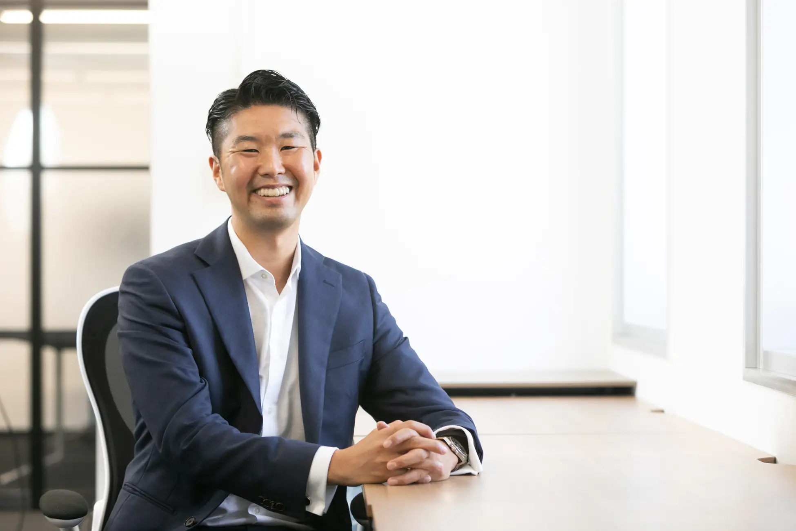

4. CEO MESSAGE代表紹介
“IT業界の常識を覆し、志ある挑戦者が報われる会社を創りたい”
私自身、営業の世界でトップを目指し走り続けてきました。その中で痛感したのは、「本気の挑戦は、人を大きく成長させる」という事実です。しかし、IT業界には「経験がなければ挑戦の機会すらない」という壁が存在します。SPINTECHNOLOGYは、その壁を壊すために設立しました。学歴や経歴は関係ありません。必要なのは「プロになりたい」という熱い志だけです。私たちの充実した教育・サポート体制のもと、日々進化を続ける「人」こそが、最大の強みです。
岡田佳祐
- 趣味：フットサル、野球、ゴルフ、スマブラ
主な経歴
- 営業職として業界3000人の中で3年連続TOPセールスの獲得
- マネジメント職を経て、100名規模の事業責任者として毎年200%の事業拡大に成功し同社役員に就任
- 2021年9月1日 株式会社 SPIN TECHNOLOGY設立
